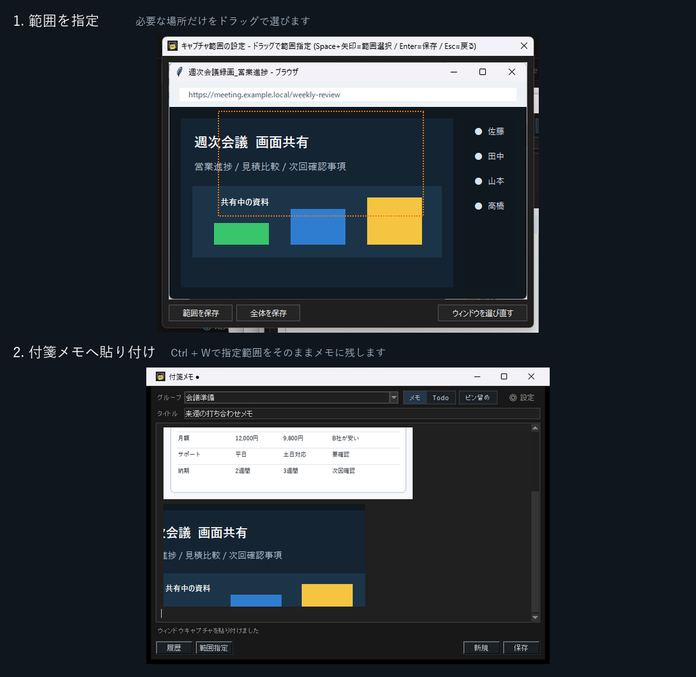
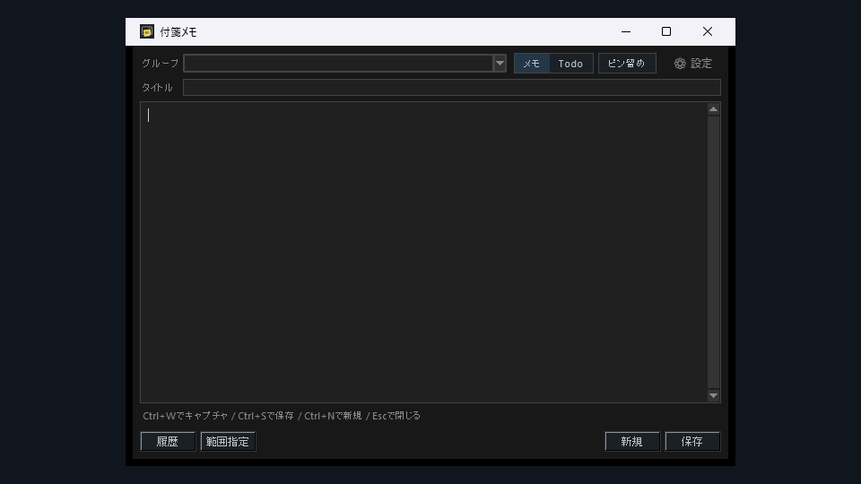
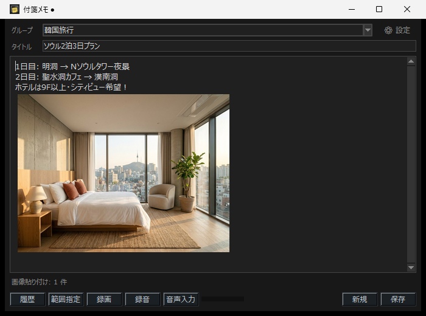
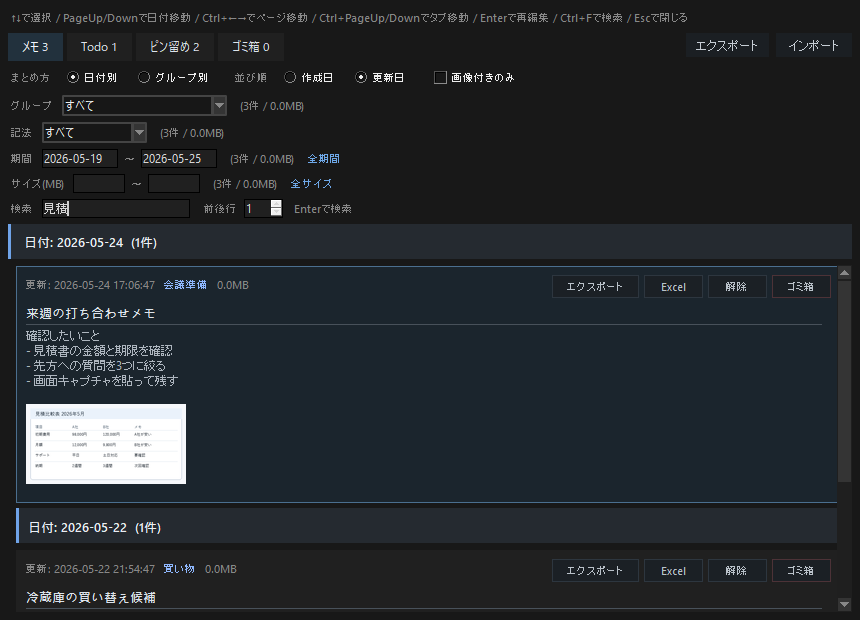
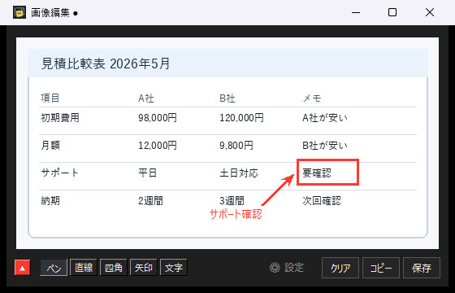
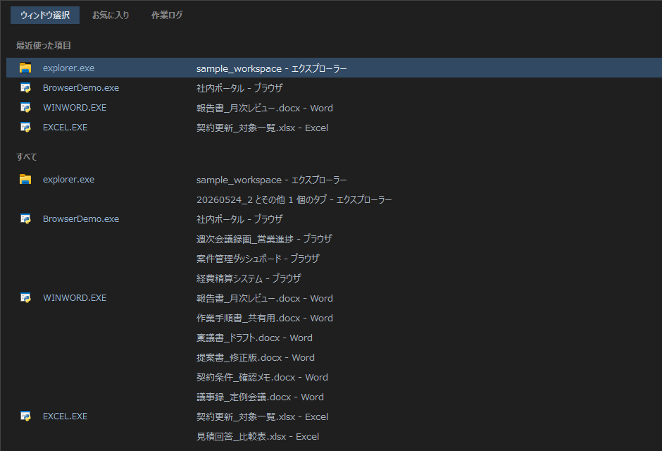
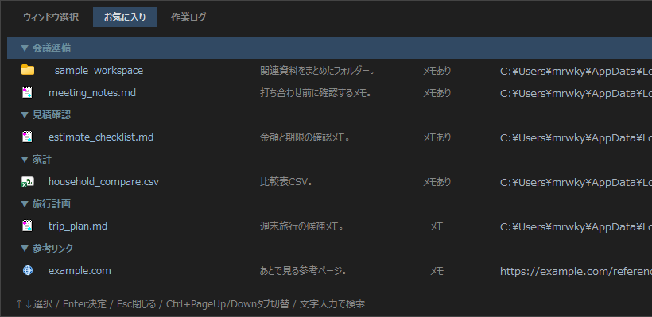
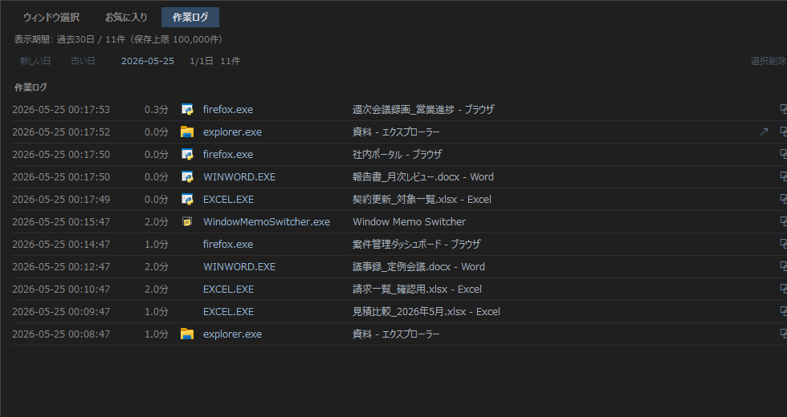

Ctrl + W
指定範囲キャプチャ
Ctrl+Wで、指定したウィンドウの必要な部分だけを切り取り、付箋メモへ貼り付けられます。Web会議や動画、資料画面の一場面を残すときに使えます。
作業中のウィンドウ、資料、フォルダー、画像メモ、履歴を、ひとつの操作面から扱うWindows向け常駐ツールです。
開いているウィンドウへ戻る、よく使う資料を開く、作業ログをたどる、画面を切り取って残す。日々の細かい移動と記録を、同じ画面で扱えます。

Excel、Word、Chromeなどのブラウザ、フォルダーを何度も往復する作業で、開く・戻る・残す・探すを短い操作にまとめます。
大量に開いたExcelやWordも、ファイル名の一覧から探してすぐ前面に戻せます。
よく使うフォルダー、ファイル、URLをグループごとに整理して開けます。
Web会議やYouTubeなどの動画の一場面も、指定した領域だけをCtrl+Wで切り取ってメモに貼れます。
残したメモと開いた資料の流れを、あとから検索してたどれます。
Window Memo Switcherは、作業中の移動と記録を支える常駐ツールです。開いている画面へ戻る、よく使う資料を開く、気づきを画像ごと残す操作を、まとめて扱えます。



Ctrl+Wで、指定したウィンドウの必要な部分だけを切り取り、付箋メモへ貼り付けられます。Web会議や動画、資料画面の一場面を残すときに使えます。

貼り付けた画像に、ペン、直線、四角、矢印、文字でメモを書き込めます。書き込んだ内容は後から移動や削除もできます。

Windowsのプレビューでは追いづらい大量のExcelやWordも、ファイル名の一覧からキーボードで選べます。

よく使うフォルダー、ファイル、URLをグループ化し、関連メモも一緒に持てます。

直近で開いたウィンドウや資料を日別にたどり、作業の流れを後から確認できます。
無料版をそのままダウンロードできます。開発を応援したい方向けに開発支援版（中身は無料版と同じ）も用意しています。